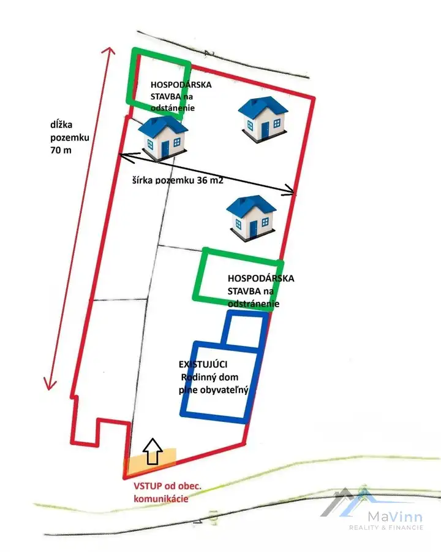
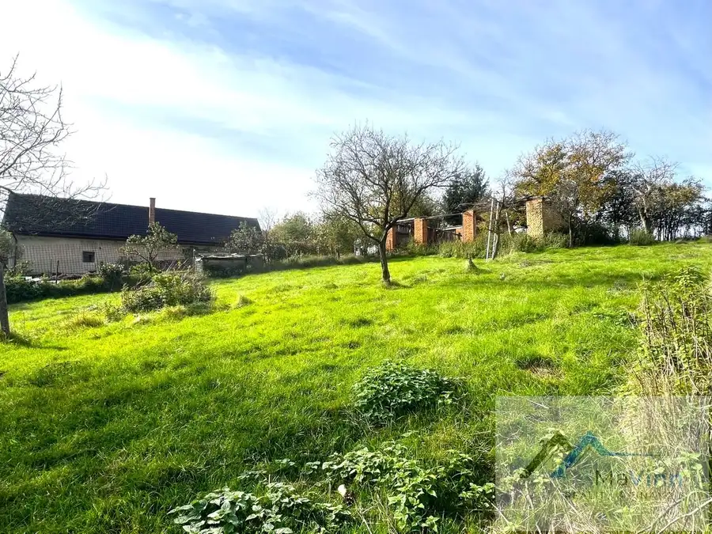
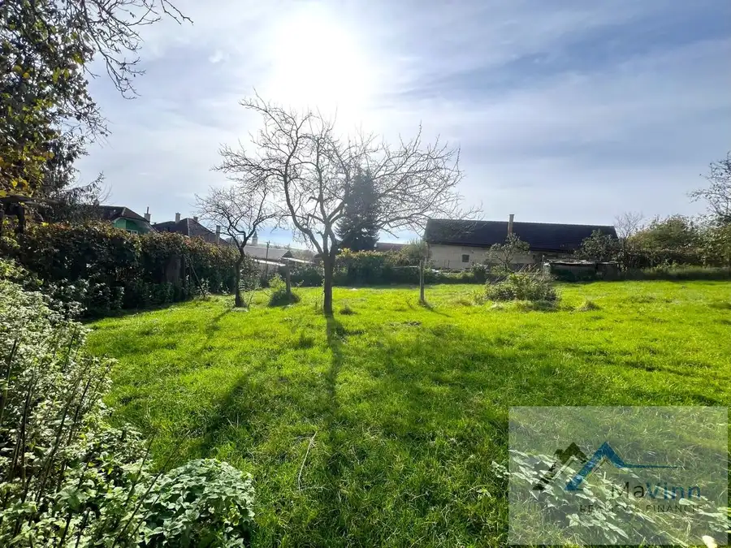
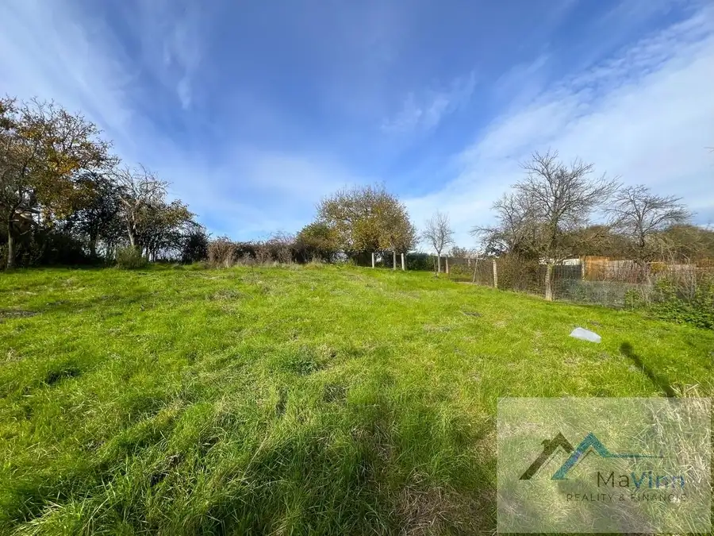
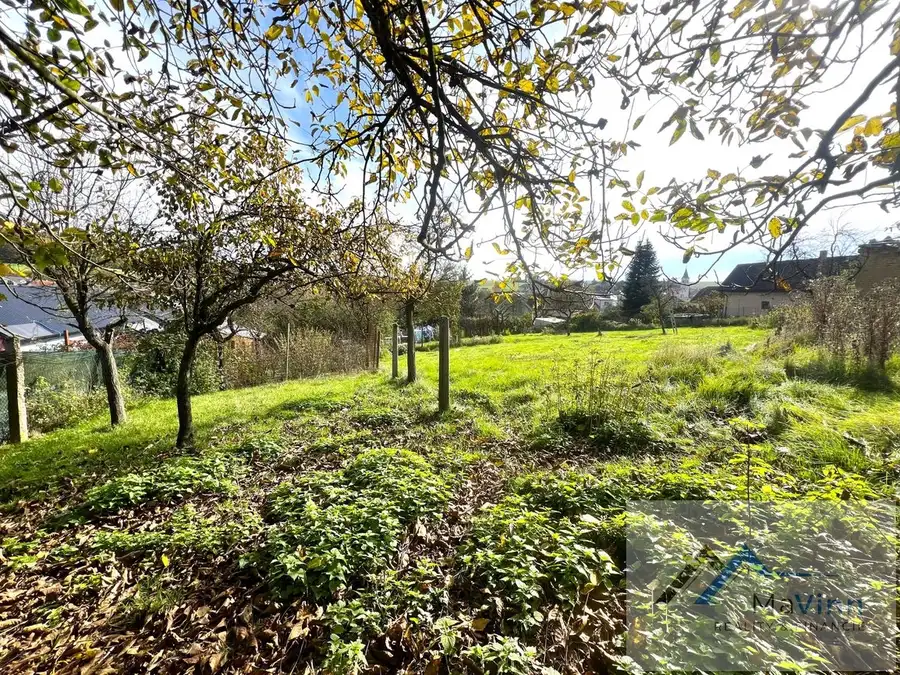
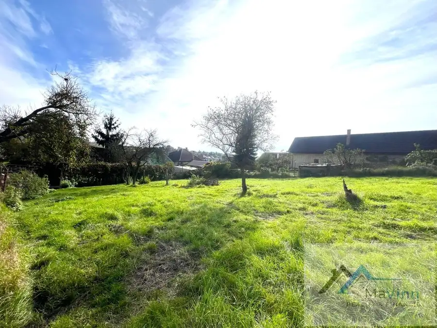
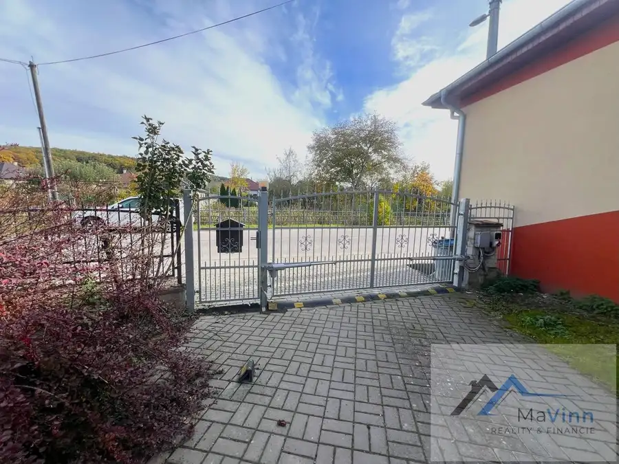

PONUKA veľký pozemok 2633 m² pre 3 NOVOSTAVBY Prusy
Prusy







- Plocha2633 m²
O nehnuteľnosti
MaVinn reality Vám ponúka EXKLUZÍVNE na predaj pozemok o rozlohe 2633 m² s rodinný dom ( plne funkčným, obývaným a čiastočne zariadeným) v obci Prusy, 3 km od okr. mesta Bánovce nad Bebravou. Veľkorysá rozloha pozemkov sa dá využiť pre výstavbu aj 3 rodinných domov. Z celkovej rozlohy 2633 m² je možné pre stavebné pozemky vyčleniť cca 1800m², pre príjazdovú cestu plus 250m² a pre existujúci dom zostane 583 m².Existujúci dom a pozemok okolo neho je možné odčleniť a vznikne IHNEĎ možnosť PREDAJA aktuálneho domu a zvyšnú časť pozemkov využiť na výstavbu RD. Prístup je z existujúcej asfaltovej obecnej komunikácie a vstup na pozemok aj k zadným pozemkom by bol vytvorený v prednej časti – kde novozriadenou cestou sa umožní prístup k budúcim zadným novostavbám. Inžinierské siete sú pred existujúcim RD – verejný vodovod, prípojka plynu a elektrické stĺpy. Kanalizácia v obci nie je, existujúci dom má vlastnú ČOV.Existujúci dom je postavený (pôvodná časť) z tehly pred 80 rokmi a rozsiahla prístavba – dnešná podoba z kvádry pred 50 rokmi. Dispozičné riešenie domu:PRÍZEMIE (100m²): cez vstupnú presklenú predsieň sa vchádza do obytnej časti, ktorú tvorí chodba kde je umiestnený krb s prieduchmi do izieb, pekná kuchyňa, dve veľké predné miestnosti (spálňa a obývačka), detská izba a naozaj veľká kúpeľňa. Schodiskom sa vchádza do PODKROVIA (60m²) kde sa nachádzajú dve veľké izby, jedna s balkónom, povalový priestor a na chodbe je dotiahnutá voda aj odpad pre dorobenie kúpeľne alebo aj kuchyne. Dom je podpivničený z 2/3 asi 60m² plochy. V pôvodnej časti domu sa nachádzajú: garáž, skladové a hospodárske miestnosti. Pred 50 rokmi bola uskutočnená prístavba domu a v roku 2007 sa začala postupná rozsiahla obnova domu. Krytina je betónová Bramac, stropy sú sadrokartónové - zateplené minerálnou vlnou, okná sú plastové dvojsklo montované pred 10 rokmi. Kúpeľňa a kuchyňa boli novo vybudované pred 17 rokmi. Vykurovanie v dome je plynové (gamaty) + prostredníctvom krbu s prieduchmi a + tretí zdroj kúrenia sú elektrické radiátory . Ohrev vody je zabezpečený veľkým tepelným čerpadlom dodaným pred 2 rokmi. Elektrické rozvody sú medené a elektrickú energiu zabezpečuje 16 fotovoltických panelov montovaných pred 3 rokmi. Odpady sú riešené vlastnou čističkou odpadových vôd vybudovanou pred 4 rokmi.Vstup do domu je cez bránou na diaľkové ovládanie, ktorú spolu s novým plotom montovali pred 2 rokmi. Vo dvore pred verandou je prestrešenie s posedením a za dvorom je krásna veľká záhrada, kde v okrajovej časti sú hospodárske stavby pre sliepočky, a aj ďalšie skladové miestnosti.Nehnuteľnosť sa nachádza v bezpečnej, pokojnej lokalite, v tichej bočnej uličke, mimo hlavnej cesty, s asfaltovou prístupovou komunikáciou a pekným prostredím navôkol. Náklady na bývanie sú aktuálne: elektrika 120 €/mesiac, plyn 30 €/mesiac, voda 15 €/mesiac.Ak Vás nehnuteľnosť zaujala, tak pre bližšie informácie a obhliadku ma neváhajte kontaktovať.V prípade financovania kúpy nehnuteľnosti prostredníctvom hypotéky Vám s vybavením hypotéky rada pomôžem. Kúpna cena zahŕňa komplet právny, hypotekárny servis a celý kúpno-predajný proces.Ing. Marianna Pečovskárealitný a úverový poradcatel: 0908 524 620mail: pecovska@mavinn.skMaVinn s.r.o.Reality a financieweb: www.mavinn.sk
Parametre
- Druh
- Pozemok pre rodinné domy
- Dátum zverejnenia
- 21. 10. 2025
- Dĺžka pozemku
- 73
- Elektrina
- Na pozemku - 400 V
- Odpadové vody
- Na pozemku - Žumpa
- Plocha pozemku
- 2633 m²
- Plyn
- Pri pozemku
- Pripravenosť k výstavbe
- Predbežný súhlas
- Terén pozemku
- Rovinatý
- Typ
- Predaj
- Voda
- Na pozemku - Diaľkový vodovod
- Šírka pozemku
- 36